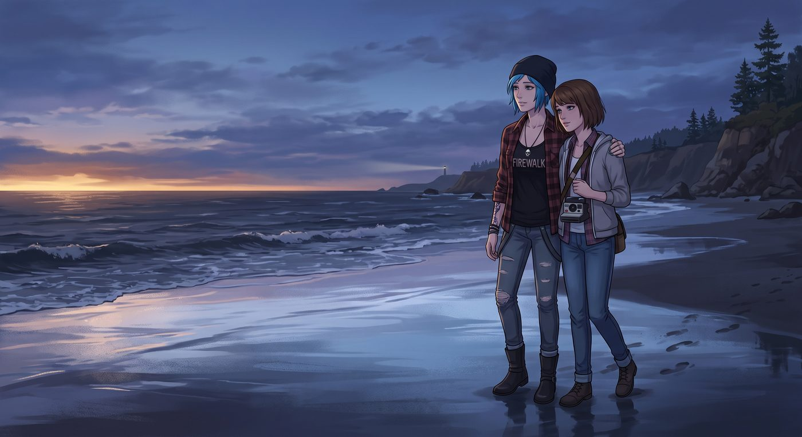
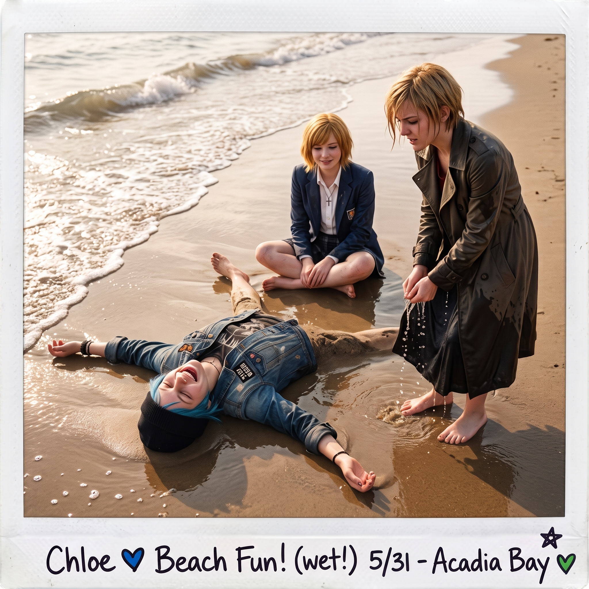

下海追逐戰


落日的最後一抹鎔金色剛沉入海平面，潮水退去後的硬沙灘便泛起一層冰冷的光澤。
「既然連高定短靴都脫了，」Chloe 甩了甩沾著沙子的腳踝，眼神裡閃爍著純粹的惡作劇光芒，「那就別想只在沙丘上當看客！」
話音未落，Chloe 甚至沒給任何人反應的時間，長臂一伸，左手精準扣住了剛換上備用拖鞋、正試圖往後縮的 Victoria 的手腕，右手則一把抄起 Max 的胳膊。
「Chloe！等一下——水很冰！」Max 甚至來不及把脖子上的相機塞進外套，整個人就被一股不可抗拒的怪力拽得往前踉蹌了兩步。
「Price！放手！妳這頭沒開化的西雅圖野豬！」Victoria 的尖叫聲瞬間撕裂了海灘的寧靜。她試圖用腳跟剎車，但光裸的腳掌踩在滑膩的濕沙上根本毫無著力點，拖鞋在第一秒就被甩飛在五米開外。
「Kate！掩護左翼，跟上！」Chloe 狂笑著回頭大喊了一聲。
原本站在後方捧著保溫杯的 Kate 剛想出言勸阻，卻見 Chloe 像一台全速運轉的推土機一樣橫衝直撞而來，順勢用手肘勾住了她的毛衣袖口。四個人瞬間像一串失控的多米諾骨牌，尖叫著被拖向泛著白沫的太平洋浪頭。
「嘩啦——！」
第一道冰冷刺骨的初夏海浪猛地拍上了她們的小腿肚。
俄勒岡五月的海水溫度低得像融化的冰川水。接觸到皮膚的瞬間，Victoria 發出了一聲直衝雲霄的高音尖叫，整個人像觸電般原地起跳，下意識地死死抱住了離她最近的 Kate：「冷死了！天哪！這水裡有碎冰嗎？！我的腳踝要壞死了！」
Kate 也被凍得倒吸冷氣，但比起低溫，她更怕兩人一起摔倒，只能一邊發抖一邊穩穩托住 Victoria 的肩膀：「沒事……沒事 Victoria，深呼吸……主啊，真的很冰……」
「這才叫活著的感覺！」Chloe 肆無忌憚地在淺水區踩水，濺起的白色水花劈頭蓋臉地砸向四周。她惡作劇般地用腳掌在水面上猛踢一腳，一道水幕精準地潑在了 Max 的牛仔褲管上。
「Chloe Price！！」Max 終於被激起了勝負欲。她迅速把相機高高舉過頭頂遞給身後相對安全的 Kate，隨後彎下腰，用雙手捧起一捧冰涼的海水，毫不留情地朝著 Chloe 的藍髮潑了過去。
水花正中 Chloe 的臉頰，藍色的劉海瞬間濕漉漉地貼在額頭上。
「哇哦，考菲爾德長官發起反擊了？」Chloe 抹了一把臉上的海水，笑得露出兩排白牙，立刻彎腰掀起更大的浪花反擊。
「你們這群幼稚鬼到底幾歲啊？！」Victoria 站在冰水裡瑟瑟發抖，名貴的羊絨大衣下擺已經被浪花浸透變重。然而，就在她咬牙切齒咒罵的瞬間，Chloe 踢起的一小簇水花不偏不倚濺到了她的鼻尖上。
名媛最後的理智防線徹底斷裂。
Victoria 猛地抹掉鼻尖的水珠，踩著冰涼的海水，眼神裡燃起復仇的火焰：「很好，Price。妳完了。」
她甚至顧不上大衣吸水後的重量，直接用腳踢起一串水珠，精準地反潑向 Chloe 的胸口，隨後拉著 Kate 當掩體，指揮道：「Marsh！左邊！用水潑她的紋身！」
原本安靜溫和的 Kate 被夾在中間，看著滿臉通紅、全力反擊的 Victoria 和大笑著躲避的 Chloe，終於忍不住也彎下腰，小心翼翼地用手掌舀起一小捧水，輕輕拍在了 Chloe 的手臂上，嘴角揚起惡作劇得逞的明亮笑容。
四個人在及踝的淺水區追逐打鬧，冰冷的海水被踩踏出無數白色的泡沫。尖叫聲、笑罵聲與海浪拍擊沙灘的轟鳴混雜在一起，隨風飄向漸暗的夜空。
直到每個人都氣喘吁吁、褲腿全濕地跌坐回乾爽的沙灘上，寒冷才被狂奔帶來的體溫徹底驅散。
Chloe 大仰八叉地躺在沙堆裡，任由海水泡沫舔舐著腳趾，胸口劇烈起伏地大笑著；Victoria 靠在一旁，金髮凌亂，正狼狽地擰著風衣下擺的水，嘴裡罵著「瘋子」，眼神裡卻沒有一絲慍色；Kate 坐在兩人中間，正笑著幫 Max 遞毛巾。
Max 跪在乾燥的沙子上，重新端起完好無損的相機，對準了眼前這片狼藉卻無比鮮活的混亂，輕輕按下了快門。